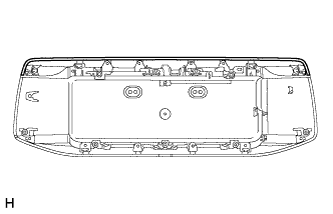
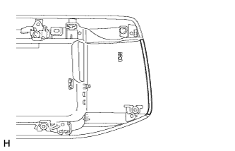
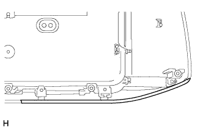

BACK DOOR OUTSIDE GARNISH > REASSEMBLY |
| 1. INSTALL LOWER BACK DOOR OUTSIDE GARNISH |
Attach the 2 claws to install the lower back door outside garnish.
Install the 6 screws.
| 2. INSTALL NO. 2 BACK DOOR OUTSIDE GARNISH |
Attach the 2 claws to install the No. 2 back door outside garnish.
Install the 8 screws.
| 3. INSTALL BACK DOOR OUTSIDE GARNISH PROTECTOR |
| Item | Temperature |
| Back Door Outside Garnish Sub-assembly | 20 to 30°C (68 to 86°F) |
For upper side:
Clean the back door outside garnish sub-assembly surface.
|  |
Install a new back door outside garnish protector.
For left and right side:
Clean the back door outside garnish sub-assembly surface.
|  |
Install a new back door outside garnish protector.
For lower side:
Clean the back door outside garnish sub-assembly surface.
|  |
Install a new back door outside garnish protector.
| 4. INSTALL NO. 1 BACK DOOR GARNISH RETAINER |
Install the No. 1 back door garnish retainer with the 3 screws.
| 5. INSTALL LICENSE PLATE LIGHT ASSEMBLY |
Install the lights with the 2 screws.
Connect the connector.
| 6. INSTALL BACK DOOR ELECTRICAL KEY SWITCH |
Attach the 2 guides to install the back door electrical key switch.
Install the 2 screws.
Attach the clamp.